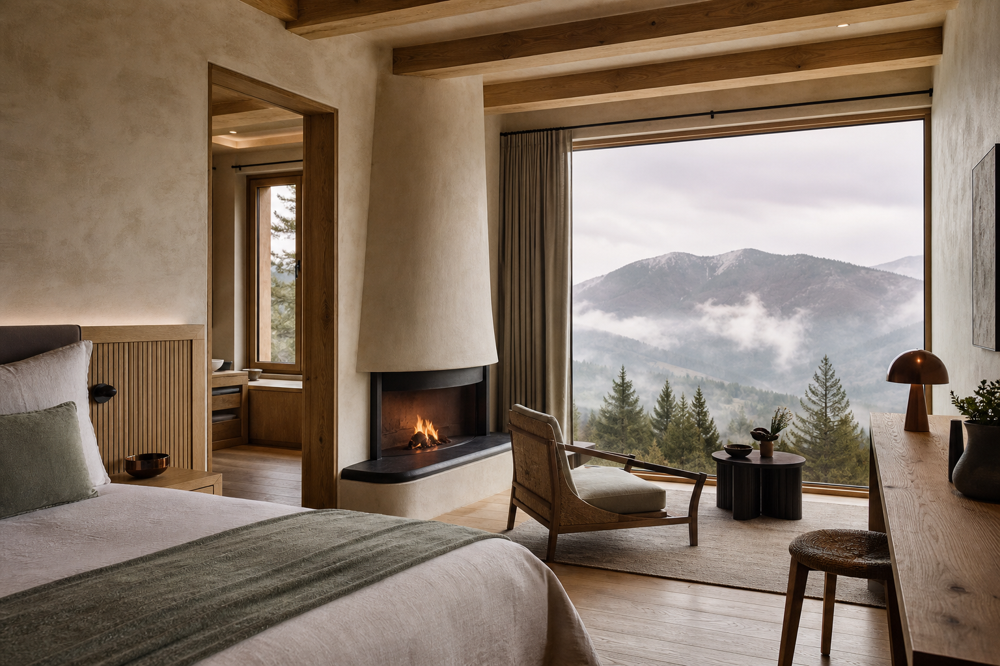
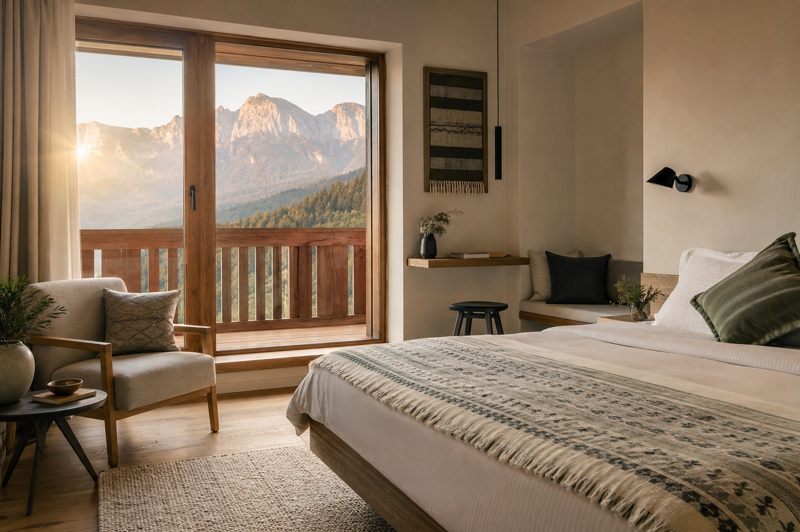
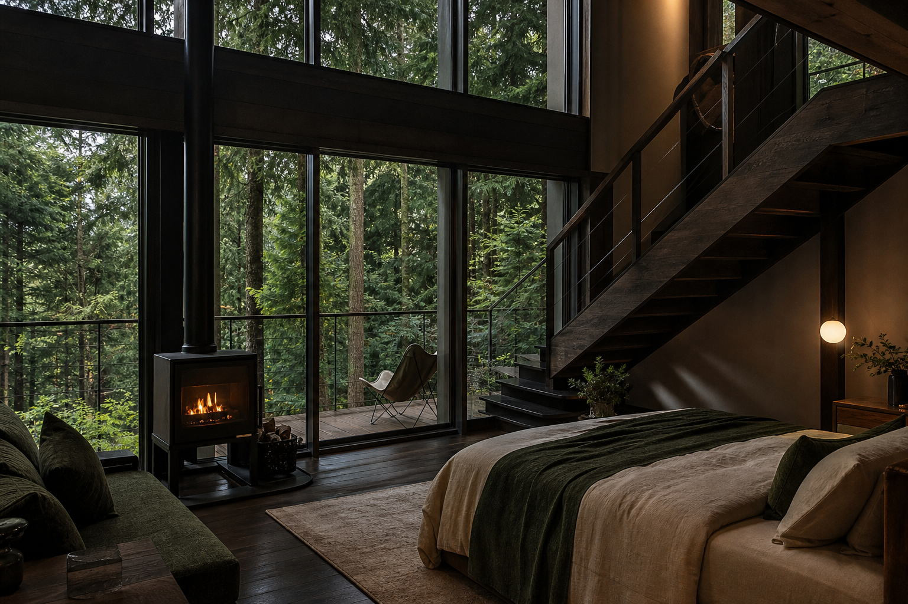
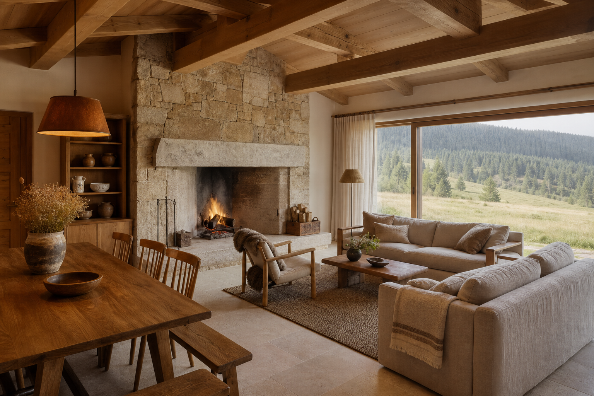

18 camere · 4 tipologii
Spațiu pentru a respira.
Fiecare cameră privește muntele și păstrează în interior materiale ale locului: stejar, piatră, lână și ceramică lucrată manual.



Inclus în fiecare ședere
Mic dejun, spa și munte.
Acces la sauna de pădure, mic dejun à la carte și un traseu ghidat.
Verifică disponibilitatea